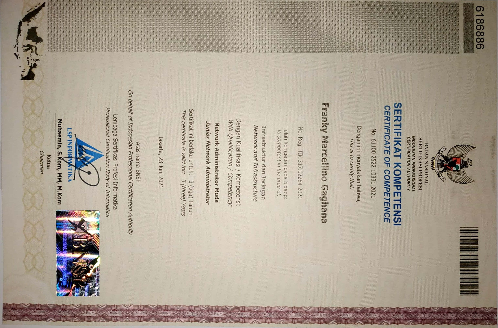
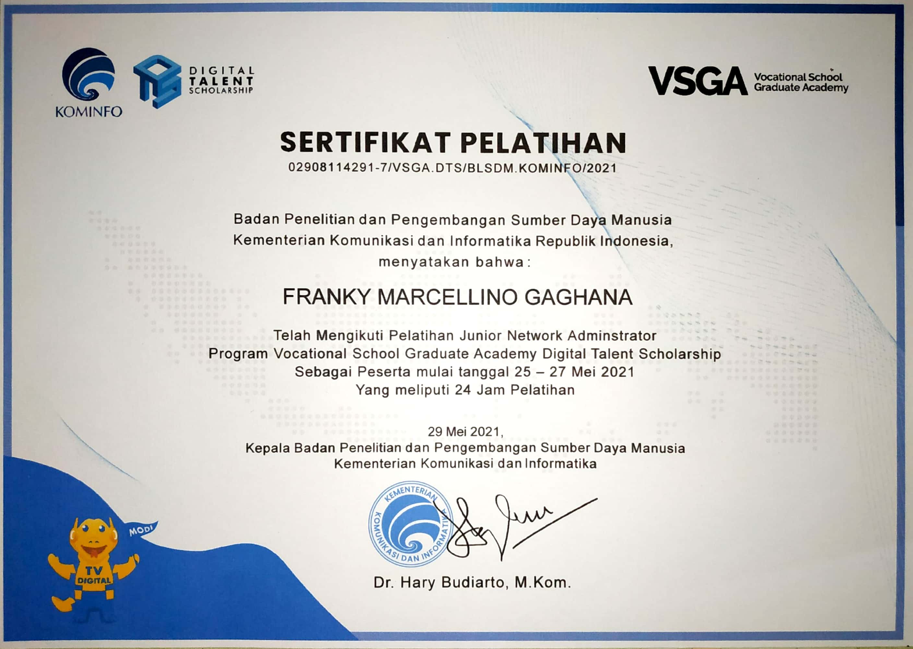
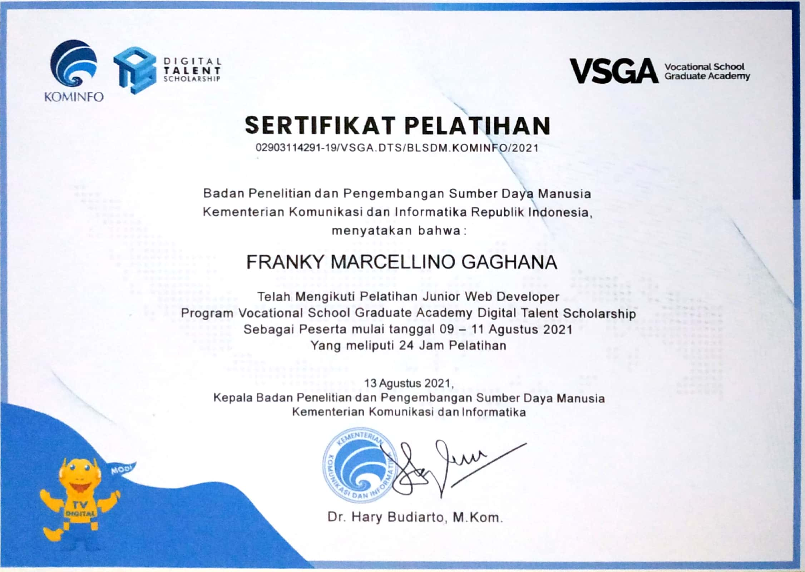
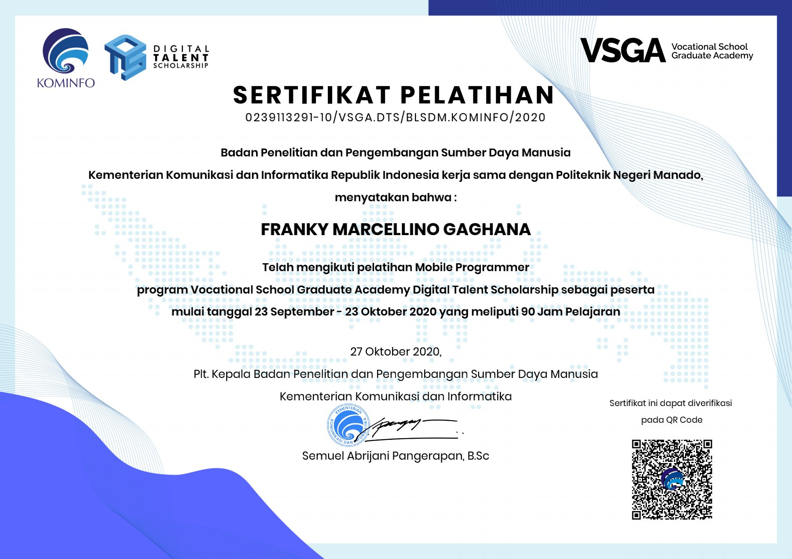
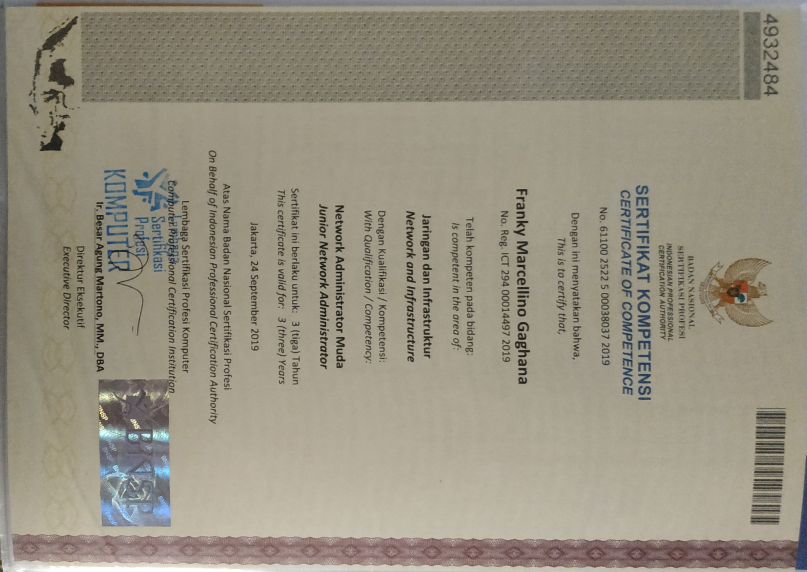

Experiences
- Hard to do doesn't mean you can't! -
Educations
College
Aug 2018 - Now
Manado State Polytechnic
Studying - Informatics Engineering
Informatics Engineering is a tertiary education department that studies and Applies the Principles of Computer Science and Mathematical Analysis in the Design, Testing, Development, and Evaluation of Operating Systems, Software, Computer Programming Performance, Software Development, and Technology Computer Network.
AddressVocational High School
Jun 2016 - May 2018
Yadika
Graduated - Computer and Network Engineering
Computer and Network Engineering is a technique that learns about PC installation, LAN installation, PC repair, and learns Basic Networking with the help of various virtual tools such as VirtualBox & VmWare and gets to know the basics of network tools from the Cisco & Mikrotik brand and also learns Basic Programming.
AddressJunior High School
Jun 2013 - Jun 2015
Manado State 10 Junior High School
Graduated
Junior High School is the level of basic education in formal education in Indonesia which is taken after graduating from elementary school (or its equivalent). Junior high school is taken in 3 years, starting from grade 7 to grade 9.
AddressElementary School
Jun 2006 - Jun 2012
Elementary School Inpres 01 Paniki Bawah
Graduated
Elementary school is the most basic level of formal education in Indonesia. Elementary school is taken in 6 years, starting from grade 1 to grade 6.
AddressCareers
BNSP - Network Administrator
Jun 2021
Certification of Indonesian National Work Competency Standards (SKKNI) | Network Administrator Scheme
Competencies taken - Designing Network Addressing, Installing Wireless Networks, Configuring Switches on the Network, Configuring Routing on Network Devices in one Autonomous System, Configuring Routing on Network Devices between Autonomous Systems.
SKKNI - Network Administrator
May 2021
Indonesian National Work Competency Standards (SKKNI) Training | Network Administrator Scheme
Competencies taken - Network Topology, Network Installation Technical Requirements, Network Device Specifications, Network Addressing, Wireless Networking, Switch Configuration, Routing Configuration in one Autonomous System
SKKNI - Web Developer
Aug 2021
Indonesian National Work Competency Standards (SKKNI) Training | Web Developer Scheme
Competencies taken - Implementation of User Interfaces, Application of execution orders of Text, Graphics, and Multimedia-based Programming Languages, Compilation of file functions or other programming resources in a neat organization, Writing code with principles according to guidelines and best practices, Implementation of structured programming, use of pre-existing libraries or Components
DTS - Mobile Programmer
Oct 2020
Digital Talent Scholarship-Vocational High School (DTS-VSGA) Training | Network Administrator Scheme
Competencies taken - Competencies taken - Designing Mobile Interfaces, Designing UI on Android, Showing Platform Operating Systems and Programming Languages in Software, Designing Databases and Data Persistence on Mobile Data, Designing Databases with SQLite, Developing Mobile Location Services, GPS and Mobile Navigation, Mobile Security Basics, Showing Mobile Sensors and Their Technical Specifications for Mobile Computing.
BNSP - Network Administrator
Sep 2019
Digital Talent Scholarship-Vocational High School (DTS-VSGA) Certification | Network Administrator Scheme
Competencies taken - Designing Network Addressing, Installing Wireless Networks, Configuring Switches on the Network, Configuring Routing on Network Devices in one Autonomous System, Configuring Routing on Network Devices between Autonomous Systems.
DTS - Network Administrator
Jul 2019
Digital Talent Scholarship-Vocational High School (DTS-VSGA) Training | Network Administrator Scheme
Competencies taken - Network Topology, Network Installation Technical Requirements, Network Device Specifications, Network Addressing, Wireless Networking, Switch Configuration, Routing Configuration in one Autonomous System

ASC - ITNSA
Jun 2019
ASEAN Skills Competition | IT Network System Administration
Participants on Regional Selection of ASEAN Skills Competition XIII for IT Network System Administration Skill Area in North Sulawesi Province.

LKS - ITNS
Apr 2018
Student Competency Competition | IT Networking Support
4th Place in the Competency Competition of Vocational High School Students in the Field of IT Networking Support at the North Sulawesi Province Level.